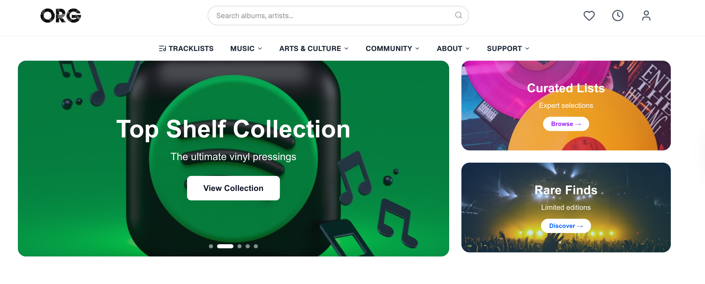

flowchart LR
User[End User] <-->|Interacts| UI[Next.js Frontend]
UI <-->|JSON Requests| API[Flask API]
API <-->|SQL Queries| DB[(PostgreSQL DB)]
subgraph Backend Layer
DB
API
end
subgraph Frontend Layer
UI
end

Introduction
As data scientists, we often live in Jupyter Notebooks. We clean data, build models, and generate insights. But there is a common “last-mile” problem: How do we deliver these insights to a non-technical end-user?
Sending a CSV file or a static PDF report is often not enough. To truly make data accessible, we need to wrap it in an interactive, user-friendly interface. This brings us into the realm of Full-Stack Data Science.
In this tutorial, we will bridge the gap between backend data analysis and frontend user experience. We will move beyond simple scripts to build a production-ready Web Application.
What We Are Building
We will build a Digital Media Store (a platform for browsing Music and Art). This project isn’t just a “Hello World” example; it mimics a real-world e-commerce structure featuring:
- A Structured Database: Managing relational data (Tracks, Albums, Artists, and Genres).
- A RESTful API: Serving data dynamically to any client.
- A Modern Frontend: A reactive user interface that feels like a native app.
The Tech Stack: Why This Combination?
You might ask: “Why not just use Streamlit or Dash?” While those tools are excellent for rapid prototyping, they often lack the flexibility needed for consumer-facing products. To have full control over the user experience (UX), we will use a robust industry-standard stack:
- PostgreSQL (Database): The gold standard for open-source relational databases. Unlike a simple CSV or Excel file, SQL ensures our data is consistent, queryable, and scalable.
- Flask (Backend): A lightweight Python web framework. Since Python is the native language of data science, Flask allows us to seamlessly integrate our data logic with web server capabilities.
- Next.js (Frontend): A React framework that enables us to build fast, SEO-friendly web pages. It handles the “visual” part of our store, fetching data from our Flask backend and displaying it beautifully to the user.
Learning Goal
By the end of this tutorial, you won’t just have a website; you will understand the data flow of a modern web application—from a raw SQL query to a rendered pixel on the user’s screen.
Project Architecture
Before writing code, it is crucial to understand how our system components talk to each other. We are adopting a Decoupled Architecture (separation of concerns), where the Backend (API) and Frontend (UI) are independent projects.
As shown in the diagram above:
- The User clicks a button on the webpage.
- Next.js sends a request to our Python server.
- Flask interprets the request and queries the database.
- PostgreSQL returns the raw data.
- Flask formats this data into JSON and sends it back.
- Next.js renders the data into HTML for the user to see.
Step 1: Architecture & Setup
Before writing a single line of query, we need to design our system’s foundation. This stage separates a “script” from an “application.”
1.1 Version Control & Environment
A robust project starts with a clean environment. We initialize our Git repository to track changes, but more importantly, we configure it to ignore sensitive or heavy files.
We create a .gitignore file to ensure we don’t accidentally commit our virtual environment, database binaries, or API keys.
# Terminal commands to setup the project
git init
python -m venv venv
source venv/bin/activate # or venv\Scripts\activate on Windows
pip install flask sqlalchemy pandas psycopg2-binaryCrucial: Our .gitignore file looks like this:
venv/
__pycache__/
.env <-- Never commit secrets!
data/*.db <-- Don't commit local binary databases
.DS_Store
1.2 Data Architecture Design
Our raw data comes from a flat CSV file (backend/data/data.csv). However, a flat file is inefficient for a store application where we need to query “all tracks by one artist” instantly.
We transform this flat data into a Relational Model (3rd Normal Form). We identified three core entities:
- Tracks: The individual songs.
- Albums: Collections of tracks.
- Genres: Categories.
Here is the Entity Relationship Diagram (ERD) representing our schema:
erDiagram
ALBUM ||--|{ TRACK : contains
GENRE ||--|{ TRACK : classifies
TRACK {
int id PK
string title
string composer
int milliseconds
int album_id FK
int genre_id FK
}
ALBUM {
int id PK
string title
string artist
}
GENRE {
int id PK
string name
}
By designing this upfront, we ensure our SQL queries in the backend will be efficient and our data remains consistent.
Step 2: The Backend Workflow (Flask)
Instead of hardcoding logic, we treat our Backend as a “black box” that strictly speaks JSON. This separation allows us to change the database or internal logic later without breaking the frontend.
2.1 Project Structure
Security is our priority. We never commit secrets (like database passwords) to GitHub. Instead, we use environment variables.
backend/
├── app.py # Entry point
├── config.py # Loads env variables (Safe!)
├── requirements.txt # Dependencies
└── data/ # Local database storage
2.2 API Design Pattern
We define “Routes” that correspond to our data entities. Here is the conceptual workflow for a typical API endpoint:
- Receive Request: The server listens for a specific URL (e.g.,
/api/arts). - Query Database: It asks PostgreSQL for all items in that category.
- Serialize: It converts the SQL rows into a JSON list.
- Response: It sends the JSON back with a
200 OKstatus.
We use Flask-CORS to whitelist our frontend domain, ensuring that only our website can fetch this data.
Step 3: The Frontend Workflow (Next.js)
For the User Interface, we chose Next.js for its File-System Based Routing. This means the folder structure is the website map, which is incredibly intuitive for data scientists used to organizing file directories.
3.1 Routing Logic
Looking at our app folder, we can instantly see the site map:
app/
├── page.tsx # Homepage (/)
├── arts/
│ ├── page.tsx # /arts
│ └── [category]/ # Dynamic Route
│ └── page.tsx # /arts/painting, /arts/sculpture
└── music/
└── [id]/ # Dynamic Route
└── page.tsx # /music/102, /music/505
3.2 Dynamic Data Fetching
The power of Next.js lies in dynamic segments like [id].
When a user visits /music/102:
- Next.js captures
102as theidparameter. - It triggers a server-side fetch to our Flask backend:
GET /api/music/102. - Once the JSON arrives, it populates the
ProductCardcomponent.
This approach creates a Single Page Application (SPA) feel—users can browse thousands of products without the page ever fully reloading.
// Conceptual workflow in Next.js Page
async function ProductPage({ params }) {
// 1. Get ID from URL
const { id } = params;
// 2. Fetch Data from our Python Backend
const data = await getMusicData(id);
// 3. Render UI
return (
<div className="container">
<h1>{data.title}</h1>
<AudioPlayer src={data.sample_url} />
</div>
)
}
Development Tip
Always use try-catch blocks when fetching data. If the Flask backend is offline, the Frontend should gracefully show a “Service Unavailable” message instead of crashing.
Step 4: Going Live (Deployment)
Building on localhost is safe, but shipping to production is where the real learning happens. Since we decoupled our architecture, we can host each component on the platform best suited for it.
4.1 Database ( The Cloud Layer )
We cannot use our local mydata.db (SQLite) in a scalable production environment. Instead, we migrate to a cloud-hosted PostgreSQL instance. * Platform: Neon or Supabase (Free Tier). * Action: We update our config.py in the backend to point to the new remote connection string instead of the local file.
4.2 Backend ( The Logic Layer )
Our Flask API needs a server that supports Python and Docker. * Platform: Render or Railway. * Configuration: We use the requirements.txt file to tell the cloud server which packages (Flask, SQLAlchemy, Pandas) to install. * The Crucial Step: We must set Environment Variables on the server dashboard to store our database URL safely.
4.3 Frontend ( The Presentation Layer )
Since we are using Next.js, the natural home for our frontend is Vercel (the creators of Next.js). * Integration: Vercel connects directly to our GitHub repository. Every time we push code to the main branch, Vercel automatically rebuilds and deploys the new version of the site. * Rewrites: We configure Vercel to proxy any requests starting with /api/ to our Render backend, ensuring the user’s browser never faces CORS errors.
Security First
Never commit your .env file or API keys to GitHub! Always use the “Environment Variables” settings in your hosting provider’s dashboard to inject secrets at runtime.
Conclusion
We started this journey with a static CSV file and ended with a fully functional, cloud-hosted digital media store.
By stepping out of the Jupyter Notebook and embracing a Full-Stack architecture (SQL-Flask-Next.js), we achieved something powerful: Accessibility. We turned raw data into an experience that anyone—not just data scientists—can explore and enjoy.
Future Improvements
While our application is live, product development never ends. Here is what I plan to implement in Version 2.0: 1. Search Functionality: Implementing a search bar to filter tracks by composer. 2. User Authentication: Allowing users to create accounts and save their “Favorite” tracks. 3. Payment Integration: Connecting a Stripe API to simulate real purchases.
Thank you for reading! If you are a data scientist looking to expand your toolkit, I highly recommend trying to build a small full-stack app. It changes how you think about data.